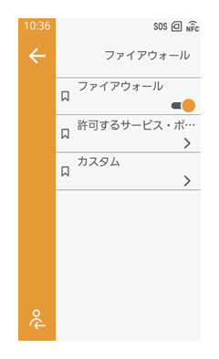

ファイアウォール設定
［通信設定］ > ［ネットワーク］ > ［詳細設定］ > ［ファイアウォール］

ファイアウォール機能を使用すると、外部のコンピュータや悪意のあるプログラムなどから不正アクセスを防ぎ、セキュリティを高めることができます。（初期値： 無効）
ファイアウォールを有効にすると、［許可するサービス・ポート］で許可したサービス・ポートのみがアクセスできます。
- ［許可するサービス・ポート］で通信を許可したサービス・ポート以外からはアクセスできなくなります。
［許可するサービス・ポート］の以下の項目は、［通信設定］メニュー内の以下に示す設定と連動して変更されます。
| ［許可するサービス・ポート］の項目 | 連動する設定項目 |
|---|---|
| ［FTP］ | ［ネットワーク］ > ［ネットワークサービス］ > ［FTP］ > ［FTP］ |
| ［LPD］ | ［ネットワーク］ > ［ネットワークサービス］ > ［LPD］ > ［LPD］ |
| ［マルチキャストDNS］ | ［ネットワーク］ > ［ネットワークサービス］ > ［マルチキャストDNS］ > ［マルチキャストDNS］ |
| ［NTP］ | ［ネットワーク］ > ［ネットワークサービス］ > ［NTP］ > ［NTP］ |
| ［プロキシ］ | ［ネットワーク］ > ［詳細設定］ > ［プロキシ］ > ［プロキシ］ |
| ［リモートデスクトップ］ | ［ネットワーク］ > ［ネットワークサービス］ > ［リモートデスクトップ］ > ［リモートデスクトップ］ |
| ［SATO Online Services］ | ［クラウドサービス］ > ［ SOS（SATO Online Services）］ > ［モード］ |
| ［SNMPエージェント］ | ［ネットワーク］ > ［ネットワークサービス］ > ［SNMP］ > ［エージェント］ > ［エージェント］ |
| ［SOTI Connect］ | ［クラウドサービス］ > ［SOTI Connect］ > ［SOTI Connect］ |
［カスタム］では、TCPやUDPの特定のポート番号やICMPタイプを指定して通信を許可できます。

- 各項目内の［追加するポート番号］でポート番号を登録する場合は、以下を参照してください。
- 複数のポート番号を指定する場合は、ポート番号をカンマ","で区切ってください。
入力例：10000,10001,10002,10003 - 範囲を指定する場合は、コロン":"を使い、「下限のポート番号：上限のポート番号」の順に入力してください。
入力例：10000:10003 - ポート番号を何も指定しない場合は、空欄にしてください。
- 複数のポート番号を指定する場合は、ポート番号をカンマ","で区切ってください。
- TCP、UDPの特定のポート番号を指定する場合に、登録できるポート番号の数は最大で21まで、ICMPタイプの番号の数は、最大44までです。